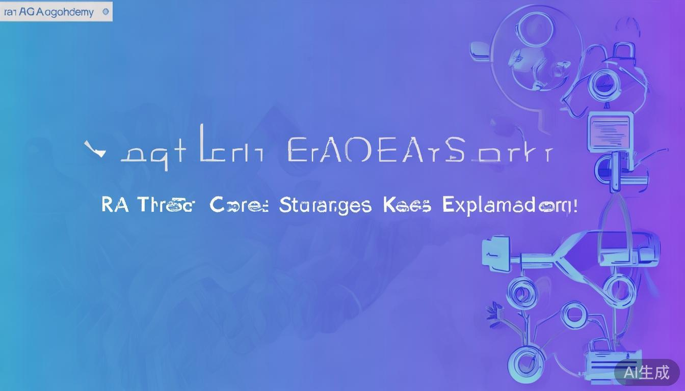

RAG 检索增强生成实战
本章将带你从0到1掌握RAG检索增强生成的核心逻辑与落地方法，解决大模型幻觉、知识过时的核心痛点。学完你不仅能用LangChain10分钟搭建私有知识库问答系统，还能掌握优化、评估技巧，快速落地企业级文档问答、客服知识库等真实场景。
为什么需要RAG：解决大模型的两大原生缺陷
大模型的参数化知识存在两个无法回避的硬伤：一是幻觉问题，即模型会在知识边界外生成看似合理但完全错误的内容，比如编造不存在的法条、产品参数；二是知识时效问题，模型的训练数据存在截止时间，无法回答训练后发生的事件、企业内部私有知识（比如2024年新发布的内部报销规则、未公开的产品手册）。
如果用微调的方式注入新知识，不仅成本高（单次微调成本从数千元到数万元不等）、更新慢（每次知识更新都需要重新微调），还无法解决细粒度知识的精准召回问题，甚至会出现知识遗忘。而RAG通过「外挂知识库」的方式，不需要修改模型参数，就能让大模型基于检索到的真实内容生成答案，成本低、更新快、可解释性强，是目前落地私有知识场景的最优方案。
常见的RAG落地场景包括：企业内部文档问答、智能客服知识库、法律/医疗专业领域问答、个人笔记助手等，几乎所有需要用到私有数据/实时数据的生成场景，都可以用RAG实现。
RAG核心框架：三大环节拆解

标准RAG的工作流可以拆分为索引、检索、生成三个核心环节，三个环节环环相扣，任何一个环节的效果都会直接影响最终的回答质量。
- 索引环节：将私有文档（PDF、Word、Markdown、网页等）处理成大模型可检索的结构化数据，核心是完成文档加载、切分、向量化、存入向量数据库四个步骤，相当于给大模型提前整理好「参考资料的索引卡片」。
- 检索环节：收到用户提问后，先将问题向量化，再从向量数据库中召回与问题语义最相关的Top K个文档片段，相当于考试时从参考资料里找到和题目相关的几个段落。
- 生成环节：将用户问题和检索到的文档片段一起组装成Prompt，传给大模型，要求模型仅基于提供的参考内容生成答案，相当于开卷考试时根据找到的资料组织答案。
这个框架的核心逻辑是「先检索后生成」，从根源上避免模型依赖不可靠的参数化知识瞎编，同时所有答案都可以溯源到原始文档，方便人工校验。
向量化与Embedding：语义检索的核心
向量化是RAG实现语义检索的基础，Embedding模型的作用是将人类能看懂的文本（句子、段落、问题）转换成计算机能计算的高维浮点数向量（通常是768维/1024维/1536维），语义越相近的文本，向量之间的余弦距离就越小。
比如“如何申请年假”和“年假的审批流程是什么”这两个字面差异很大的句子，经过Embedding模型转换后，向量距离会非常近；而“苹果手机怎么充电”和“苹果怎么吃”两个句子虽然都有“苹果”，但语义差异大，向量距离会很远——这就是语义检索比传统关键词检索更智能的原因。
选型Embedding模型时优先考虑中文适配性、向量维度、部署成本三个维度，常用中文开源模型如下：
| 模型名称 | 向量维度 | 中文效果 | 部署要求 | 适用场景 |
|---|---|---|---|---|
| bge-large-zh-v1.5 | 1024 | 优秀 | 16G显存可跑量化版 | 企业级生产场景 |
| m3e-base | 768 | 良好 | 8G显存可跑 | 中小项目/本地测试 |
| text-embedding-ada-002 | 1536 | 良好 | 调用OpenAI接口 | 海外业务/无本地部署需求 |
注意：索引文档和检索问题必须使用同一个Embedding模型，否则向量空间不匹配，会导致检索结果完全错误。
向量数据库选型：存好你的语义索引
向量数据库是专门用来存储、检索向量的数据库，核心能力是支持毫秒级的海量向量相似度查询，普通关系型数据库（比如MySQL）没有针对向量检索做优化，当向量规模超过10万条时，检索速度会下降到秒级甚至更慢，无法满足线上需求。
目前主流的向量数据库可以分为轻量本地型和分布式生产型两类，选型参考如下：
- Chroma：纯Python实现的轻量向量数据库，零配置、开箱即用，数据默认存在本地文件，不需要单独启动服务，非常适合本地测试、快速Demo、小体量知识库（10万条文档片段以内），是新手入门的首选。
- FAISS：Meta开源的向量检索引擎，本质是一个Python库，不是完整的数据库（没有自带数据持久化、多用户权限等能力），检索速度极快，支持GPU加速，适合对检索性能要求高、有二次开发能力的技术团队。
- Milvus：开源分布式向量数据库，支持亿级向量规模的毫秒级检索，自带数据持久化、多租户、标量过滤、云原生部署等生产级特性，适合中大型企业的生产环境，支持集群部署扩容。
新手入门阶段直接选择Chroma即可，只需要pip install chromadb就能安装，不需要任何额外配置，1行代码就能完成向量的存储和查询。
文档切分策略：决定检索精度的关键细节
很多新手搭RAG时效果差，往往不是模型的问题，而是文档切分没做好：如果切分的片段太长，会引入太多无关噪声，检索到的片段和问题相关性低；如果切分的片段太短，会丢失上下文语义，导致模型拿到的信息不完整。
通用的切分策略遵循「语义完整、长度适中、有重叠」三个原则，推荐优先使用LangChain内置的递归字符切分器（RecursiveCharacterTextSplitter），它会优先按段落、再按句子、最后按字符切分，尽可能保证语义完整性，新手推荐初始参数：
from langchain.text_splitter import RecursiveCharacterTextSplitter
# 初始化切分器：中文场景推荐块大小300-500字，重叠50-100字
text_splitter = RecursiveCharacterTextSplitter(
chunk_size=400, # 每个片段的最大字符数
chunk_overlap=80, # 相邻片段的重叠字符数，避免切分点刚好在语义中间
separators=["\n\n", "\n", "。", "！", "？", "，", " ", ""] # 切分优先级
)针对特殊文档需要调整切分策略：比如Markdown文档用MarkdownHeaderTextSplitter按标题层级切分，保留文档结构；代码文档用代码语言的语法切分，保证函数、类的完整性；长表格需要单独提取成结构化文本，避免被切散。切分完成后最好人工抽检10-20个片段，确认没有语义断裂、无关内容过多的问题。
用LangChain十分钟搭建知识库问答
LangChain是目前最成熟的LLM应用开发框架，封装了RAG全流程的所有组件，我们不需要从零写索引、检索、Prompt拼接的逻辑，只需要串联几个模块就能快速搭一个可运行的知识库问答系统。
首先安装依赖：pip install langchain langchain-openai chromadb pypdf python-dotenv，然后准备1-2份你自己的PDF文档（比如公司员工手册、产品说明书），就可以写代码了：
from langchain_community.document_loaders import PyPDFLoader
from langchain_community.vectorstores import Chroma
from langchain_openai import OpenAIEmbeddings, ChatOpenAI
from langchain.chains import RetrievalQA
from dotenv import load_dotenv
load_dotenv() # 从.env文件读取OPENAI_API_KEY等环境变量
# 1. 加载并切分PDF文档
loader = PyPDFLoader("员工手册.pdf") # 替换成你的本地PDF路径
pages = loader.load_and_split(text_splitter) # 用前面定义的切分器拆分文档
# 2. 构建向量数据库
db = Chroma.from_documents(
documents=pages,
embedding=OpenAIEmbeddings(model="text-embedding-ada-002"),
persist_directory="./chroma_db" # 向量数据持久化到本地文件夹
)
# 3. 构建RAG问答链
qa_chain = RetrievalQA.from_chain_type(
llm=ChatOpenAI(model="gpt-3.5-turbo", temperature=0), # temperature设为0减少随机生成
retriever=db.as_retriever(search_kwargs={"k": 3}), # 召回最相关的3个片段
return_source_documents=True # 返回答案对应的原始文档片段，方便溯源
)
# 4. 测试提问
result = qa_chain.invoke("员工入职满多久可以申请年假？")
print("答案：", result["result"])
print("参考来源：", [doc.metadata["page"] for doc in result["source_documents"]])运行代码后你就能得到基于你上传的文档生成的答案，还能看到答案来自文档的哪一页，整个流程不超过20行代码，10分钟就能跑通。如果没有OpenAI API Key，也可以替换成开源的Qwen、ChatGLM等模型，以及对应的开源Embedding模型。
RAG效果优化：从Demo到生产的核心技巧
刚搭好的基础版RAG往往会出现“检索不到相关内容”“答案被无关内容干扰”的问题，需要从检索全链路做优化，三个投入产出比最高的优化手段如下：
- Query改写：用户的提问往往是口语化、不完整的，直接用原始问题检索可能召回不到相关内容，可以先让大模型把用户问题改写成2-3个更清晰、覆盖不同表述角度的检索Query，比如用户问“请假怎么扣钱”，改写成“事假工资扣除规则”“病假薪资发放标准”“年假抵扣规则”，再用多个Query同时检索，合并去重后召回结果，召回率能明显提升（幅度随实现与数据而变，需自测）。
- 混合检索：纯向量检索擅长语义匹配，但对专有名词、数字、编号的匹配效果差，纯关键词检索（比如BM25）刚好相反，把两种检索的结果按权重融合（比如向量占70%权重，关键词占30%权重），能同时覆盖语义匹配和精准关键词匹配的场景，解决专有名词搜不到的问题。
- 重排（Rerank）：初筛召回的Top 10-20个片段，往往存在相关性排序不准的问题，可以用专门的Rerank模型（比如bge-reranker-large）对召回的片段做二次精排，只把最相关的Top 3-5个片段传给大模型，能大幅减少无关噪声，降低幻觉概率。
这三个优化手段不需要重新训练模型，只需要调整检索链路的逻辑，就能让RAG的回答准确率明显提升（幅度随实现与数据而变，需自测）-50%，是生产环境的标配优化项。
RAG评估与幻觉抑制：保证回答可靠性
RAG上线前必须做效果评估，否则很容易出现错误回答引发业务风险，评估主要从三个维度展开：检索召回率（是否找到了所有和问题相关的文档片段）、回答准确率（答案是否和检索到的文档内容一致，没有编造）、拒答能力（当知识库没有相关内容时，是否能明确回答“不知道”而不是瞎编）。
新手可以快速搭建一套人工+自动结合的评估流程：首先准备50-100个标注好的测试问题集，每个问题对应标准答案和对应的文档来源；然后用RAG系统跑所有测试问题，自动统计召回率（检索到的片段包含正确来源的比例）、答案一致性（用大模型自动判断答案是否和参考内容一致，和标准答案是否匹配）；最后人工抽检20%的结果，排查自动评估漏判的错误。
幻觉抑制可以从三个层面落地：一是在Prompt里明确要求“仅基于提供的参考内容回答，参考内容里没有的信息请明确说明无法回答，禁止编造内容”；二是给每个答案附上原始文档的来源链接/页码，方便用户核验；三是增加答案校验环节，让大模型自己检查答案里的每一句话是否都能在检索到的片段里找到依据，没有依据的内容自动删除。
小结与练习
核心收获
- RAG通过“索引-检索-生成”的外挂知识库架构，以低成本解决了大模型幻觉、知识时效差、无法访问私有数据的核心痛点，是目前LLM落地知识类场景的首选方案。
- RAG的基础搭建门槛极低，通过LangChain+Chroma+Embedding模型+大模型，20行代码就能跑通可溯源的知识库问答，但文档切分、向量模型选型直接决定基础效果。
- 生产级RAG需要通过Query改写、混合检索、重排三个核心手段提升检索精度，同时建立标准化的评估流程，通过Prompt约束、溯源机制抑制幻觉。
动手练习
- 基础练习：用自己的一份PDF文档（比如个人简历、学习笔记、公司通知），按照本章的代码示例搭建一个专属问答助手，测试3个和文档内容相关的问题，验证答案准确性。
- 优化练习：把基础版RAG的检索参数
k从3改成6，接入bge-reranker-large模型对召回结果做重排，对比重排前后的回答质量差异，记录优化效果。 - 幻觉测试：故意提3个文档里完全没有提到的问题（比如针对员工手册问“公司的年终奖怎么算”，如果手册里没提相关内容），测试RAG是否会编造答案，调整Prompt让系统在无相关内容时正确拒答。
扩展阅读方向
可以深入学习Graph RAG（基于知识图谱的检索增强生成）方案，了解如何通过提取文档中的实体、关系构建知识图谱，解决跨文档多跳推理问题（比如“张三的部门负责人审批的最高报销额度是多少”这类需要跨多个片段关联推理的问题），进一步提升复杂场景下的RAG效果。
本文由本站 AI 创作整理，内容基于公开知识/官方资料提炼，信息请以官方发布为准； 涉及的历史事件、产品与数据均可在公开渠道查证，本站不编造来源。引用外部内容遵循其原始许可，标注出处即可。